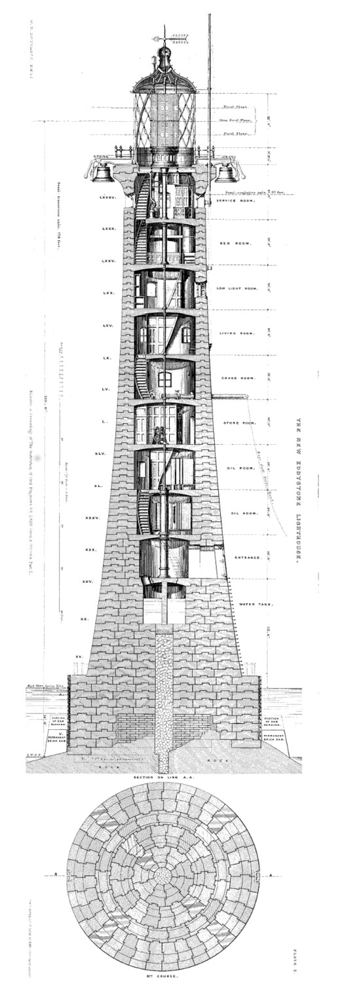
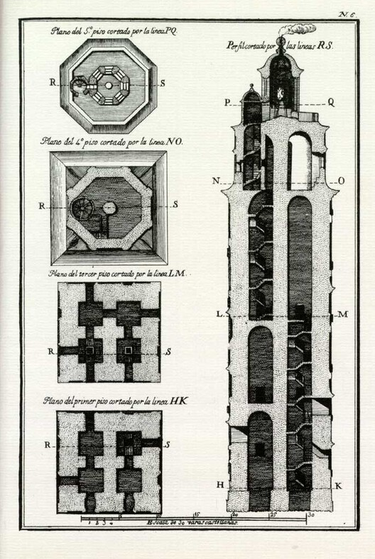
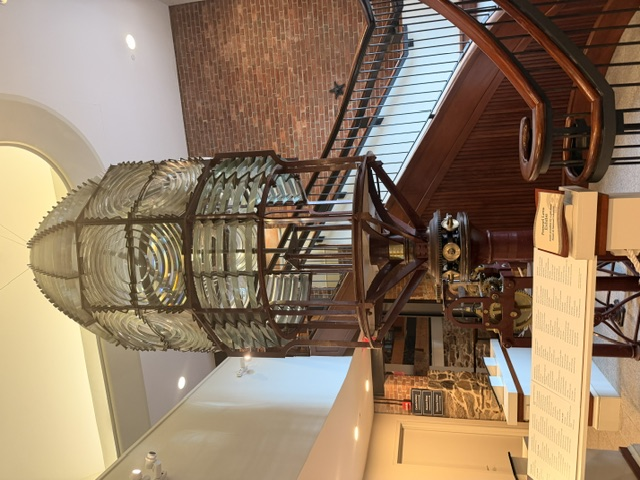
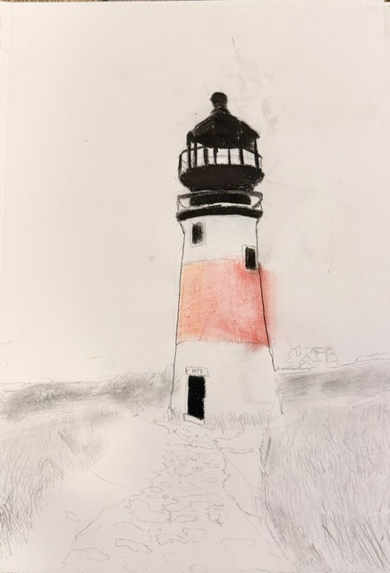
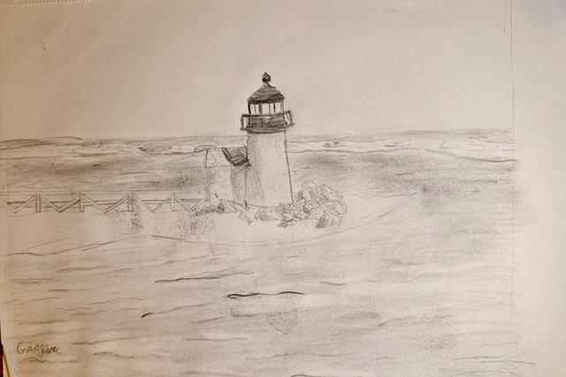

What refurbishing a 420 teaches you about systems
Every part you touch teaches you what it does. The rigging, the hull, the hardware — nothing is decorative. Fixing one thing means understanding how it connects to everything else.
Observations on systems, design, music, structures, and the way people move through spaces.
Small adjustments create huge changes. Calm people solve problems faster. The best designed systems often work quietly.
A working collection of builds, refurbishments, sketches, and ideas. Some finished. Some in progress. All of them taught me something.
Observations from the aquarium, the science center, the water, and whatever else catches my attention. One entry per shift. Short, honest, specific.
Short entries on things I've noticed, figured out, or am still thinking about. The less finished part of the site — and probably the most honest.
I'm drawn to the way buildings quietly direct human behavior — the design decisions nobody notices but everybody feels. A hallway that's a foot too narrow. A plaza that faces the wrong way. A window that arrives exactly where you need light.
I'm especially interested in urban architecture — buildings that belong to a city rather than sitting apart from it. How a building meets the street. How it handles the corner. How it makes the space around it better or worse.
Lighthouses have been around for thousands of years, and even though we don't really need them for navigation anymore, they're still proof of how much engineering and architecture have shaped the way people move through the world. A lighthouse sounds like a simple idea. Put a light somewhere high so people can see it. But the way engineers have actually solved that problem keeps changing. Fire, then oil, then electric by the 1900s. Every version comes down to what materials and technology people had at the time.
The lighthouses on Nantucket were all built in the more modern era of lighthouse design, the 1700s and 1800s, but even on the same small island, they were built completely differently, because the people building them cared about different things.



These first two aren't Nantucket lighthouses — they're reference for how engineers have historically drawn and planned a tower like this: floor by floor, course by course. Every ring of stone in a drawing like this is a structural decision, not just a shape.
Brant Point is a good example of engineering for the actual conditions instead of engineering to last forever. It was the first lighthouse on Nantucket and the second in America, and it was built to be cheap and easy to replace, not permanent. The first version was wood, built in 1746, and it only cost the community 200 pounds, about $80,000 today. That wasn't cutting corners. Nantucket's sand keeps shifting and the weather is rough, so a permanent tower would eventually stop lining up with the harbor entrance, since the entrance itself moves. Instead of fighting that, they designed around it. Brant Point has been rebuilt ten times, and the current version is from 1901, built simple enough to move again if the harbor lines shift.
Add up all ten rebuilds and Brant Point alone has cost the island about $1.04 million. Brant Point wasn't a lighthouse with a flaw. It was architecturally made knowing that it would break. That's a totally different engineering problem than building something to survive forever.
Sankaty Head Light is the opposite problem. The problem isn't just how to keep it standing, but also how to deal with the constant erosion that the beach faces. Over the hundred year period between 1900 and 2000, the beach moved about 195 feet, and then lost about 3 feet every year after that. It got moved in 2007 once the lighthouse was 70 feet from the edge, and they moved it 405 feet inland, where it should sit for at least another 100 years.
While Brant Point was built to be destroyed or easily moved, Sankaty was built to last forever. The reason why they were built differently isn't because one way was believed to be better. It's because Brant Point needed to be precise for the harbor lines, while Sankaty was used to warn or guide sailors.
Sankaty Head is also where the Fresnel lens I saw at the Whaling Museum came from. It was installed in 1850, and it was the first lens of its kind in the country to come as original equipment on a lighthouse. Before lenses like that, lighthouses just burned oil out in the open and lost most of the light. A Fresnel lens uses rings of glass prisms to bend the light into one beam instead of letting it scatter in every direction, so one whale oil lamp could be seen more than 20 miles out to sea. That's not really a building problem, it's an optics problem. Someone had to figure out how to bend light on purpose, not just produce it.
The Fresnel lens wasn't just a more efficient way to shine the light. It was revolutionary for guiding sailors, and it helped keep Nantucket a whaling powerhouse for years.


Early curiosity. What got me here was realizing how much aerospace and architecture share — both are fundamentally about enclosing space efficiently under load. An aircraft fuselage and a curtain wall system are solving the same problem at different scales and speeds.
I'm at the reading and watching stage. These are notes, questions, and things I've found interesting so far.
This was my first time using real CAD software. I didn't take a class for it, I just watched tutorial videos and figured it out as I went. My first two projects were a screwdriver and a bottle. Basic stuff like sketching a profile, extruding it into a solid, adding a fillet so the edges aren't sharp. Small parts, but it's where I learned the tools I ended up using on everything else. After that I found a guide for modeling a plane and decided to build the whole thing, an Air Tractor design, from scratch using the same workflow it walked through.
Before starting to model, I imported images of a plane design to help get a reference point. These were used many times throughout the build, including sketching the fit point splines, the windows, and having a guide for where the wings and fins go. From there I built sketch profiles at different points along the fuselage, the front, the cockpit area, the tail, using circles and curves that matched the canvas underneath. I used the loft tool to create a solid block for the body, or the fuselage, of the plane, and used the fit point splines as the guide rails to get the shape I wanted.


The wings were simpler, mostly extrude, taking a 2D wing profile sketch and pushing it straight out to the right length and angle. I tapered the extrude, and added other bodies underneath the wing to make the transition from wing to body smoother. The spinner up front started as an extrude from the front, followed by a sketch that followed a circular pattern to cut through and create the cone shape. The actual propeller blades were just a use of the rectangular pattern tool. The landing wheel was a revolve command, and two extrudes of rectangles made the bar.
Because the plane was grey solid metal by default, I used the appearance command to assign colors to each item. Compared to the screwdriver and the bottle, this was the first time I used more than one or two tools to get somewhere. It's the first project where I actually had to plan the order I built things in, not just make one shape and stop.
Structural engineering is where I have the most hands-on experience. Refurbishing a 420 sailboat with my dad was an unplanned course in how structures actually work — not in theory, but with tools, under constraint, with consequences if you get it wrong.
I'm interested in how things hold together. Bridges, hulls, frames, shells. The honest structures where every load path is visible and nothing is decorative.
This one started with a single question: how do you design something that has to hold for 10,000 years? No other engineering discipline asks that. The answer turns out to involve geology, material science, structural engineering, and a kind of humility about what future humans will and won't understand.
I'm at the very beginning here. Reading notes and questions, mostly. But it's the kind of problem I can't stop thinking about.
Drums, guitar, jazz ensemble, and 90s rock. Music is the other way I think about systems, rhythm, timing, structure, and the space between notes.
I'm Grant Prince a freshman from New Jersey, interested in urban design, architecture, engineering, systems thinking, and music.
I refurbished a 420 sailboat with my dad, which taught me more about how things connect than almost anything else I've done. I skipper 420s and spend most summer mornings on the water. I'm especially drawn to how cities and public spaces quietly shape the way people move and interact — the design choices nobody notices but everybody feels.
This summer I'm volunteering at the Maria Mitchell Aquarium and the Nantucket Science Center, and starting to learn CAD.
In school I take honors physics, AP Human Geography, honors algebra II, honors English, honors Spanish, and honors American History. Joining jazz ensemble this fall. I also play tennis.
I've been curious about a lot of things for a long time. This site is where I document what I'm building, noticing, reading, and figuring out.